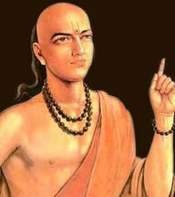
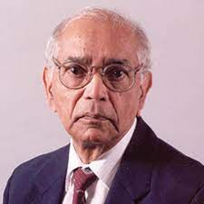
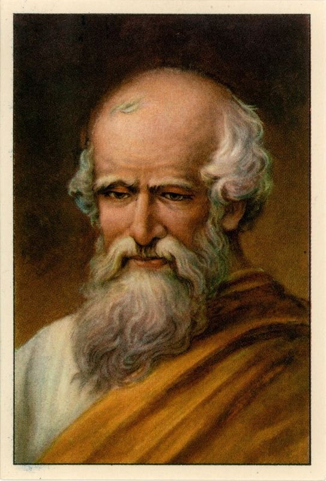
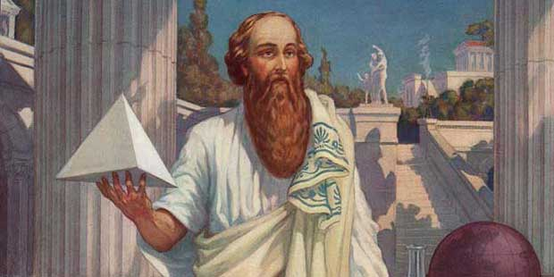
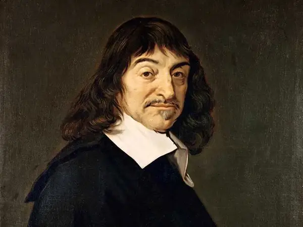
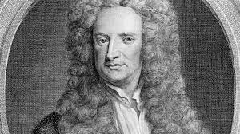
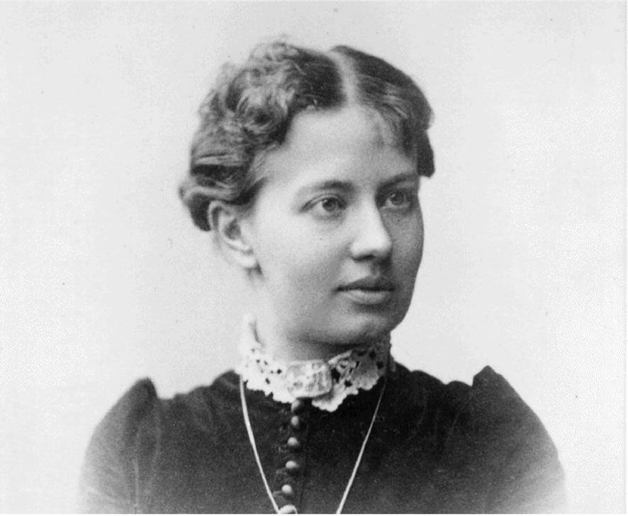

Srinivasa Ramanujan(22 December 1887- 26 April 1920) was an Indian mathematician. Though he had almost no formal training in pure mathematics, he made substaintial contributions to mathematical analysis, number theory, infinite series, and continued fractions, including solutions to mathematical problems then considered unsolvable.Ramanujan initially developed his own mathematical research in isolation. Recognising Ramanujan's work as extraordinary, Hardy arranged for him to travel to cambridge. In his notes, Hardy commented that Ramanujan had produced groundbreaking new theorems, including some that "defeated me completely; I had never seen anything in the least like them before", and some recently proven but highly advanced results. His insight into formulae was quite amazing, and altogether beyond anything I have met with in any European mathematician. It is perhaps useless to speculate as to his history had he been introduced to modern ideas and modern method at sixteen instead of at twenty-six. It is not extravagant to suppose that he might have become the greatest mathematicianof his time.Ramanujan had numerous health problems throughout his life. His health worsened in England; possibly he was also less resilient due to the difficulty of keeping to the strict dietary requirements of his religion there and because of wartime rationing in 1914–18. He was diagnosed with tuberculosis and a severe vitamin deficiency, and confined to a sanatorium. In 1919, he returned to Kumbakonam, Madras Presidency, and in 1920 he died at the age of 32. After his death, his brother Tirunarayanan compiled Ramanujan's remaining handwritten notes, consisting of formulae on singular moduli, hypergeometric series and continued fractions.

Aryabhata or Aryabhata I was an Indian mathematician and astronomer of the classical age of Indian mathematics and Indian astronomy. He flourished in the Gupta Era and produced works such as the Aryabhatiya (which mentions that in 3600 Kali Yuga, 499 CE, he was 23 years old) and the Arya-siddhanta.
Aryabhata created a system of phonemic number notation in which numbers were represented by consonant-vowel monosyllables. Later commentators such as Brahmagupta divide his work into Ganita ("Mathematics"), Kalakriya ("Calculations on Time") and Golapada ("Spherical Astronomy"). His pure mathematics discusses topics such as determination of square and cube roots, geometrical figures with their properties and mensuration, arithmetric progression problems on the shadow of the gnomon, quadratic equations, linear and indeterminate equations. Aryabhata calculated the value of π to the fourth decimal digit and was likely aware that π is an irrational number, around 1300 years before Lambert proved the same. Aryabhata's sine table and his work on trignometry were extremely influential on the Islamic Golden Age; his works were translated into Arabic and influenced Al-Khwarizmi and Al-Zarqali. In his spherical astronomy, he applied plane trigonometry to spherical geometry and gave calculations on solar, lunar eclipses. He discovered that the apparent westward motion of stars is due to the spherical Earth's rotation about its own axis. Aryabhata also noted that the luminosity of the Moon and other planets is due to reflected sunlight.His major work, Aryabhatiya, a compendium of mathematics and astronomy, was extensively referred to in the Indian mathematical literature and has survived to modern times. The mathematical part of the Aryabhatiya covers arithmetic, algebra, plane trigonometry, and spherical trigonometry. It also contains continued fractions, quadratic equations, sums-of-power series, and a table of sines.

Calyampudi Radhakrishna Rao(born 10 September 1920), commonly known as C. R. Rao, is an Indian-American mathematician and statistician. He is currently professor emeritus at Pennsylvania State University and Research Professor at the University at Buffalo. Rao has been honoured by numerous colloquia, honorary degrees, and festschrifts and was awarded the US National Medal of Science in 2002. The American Statistical Association has described him as "a living legend whose work has influenced not just statistics, but has had far reaching implications for fields as varied as economics, genetics, anthropology, geology, national planning, demography, biometry, and medicine." The Times of India listed Rao as one of the top 10 Indian scientists of all time. Rao is also a Senior Policy and Statistics advisor for the Indian Heart Association non-profit focused on raising South Asian cardiovascular disease awareness.Rao first worked at the Indian Statistical Institute and the Anthropological Museum in Cambridge. Later he held several important positions, as the Director of the Indian Statistical Institute, Jawaharlal Nehru Professor and National Professor in India, University Professor at the University of Pittsburgh and Eberly Professor and Chair of Statistics and Director of the Center for Multivariate Analysis at Pennsylvania State University.
As Head and later Director of the Research and Training School at the Indian Statistical Institute for a period of over 40 years, Rao developed research and training programs and produced several leaders in the field of Mathematics. On the basis of Rao's recommendation, the ASI (The Asian Statistical Institute) now known as Statistical Institute for Asia and Pacific was established in Tokyo to provide training to statisticians working in government and industrial organizations.Among his best-known discoveries are the Cramér–Rao bound and the Rao–Blackwell theorem both related to the quality of estimators.

Archimedes of Syracuse (287 – 212 BC) was a Greek mathematician, physicist, engineer, astronomer, and inventor from the ancient city of Syracuse in Sicily. Although few details of his life are known, he is regarded as one of the leading scientists in classical antiquity. Considered the greatest mathematician of ancient history, and one of the greatest of all time, Archimedes anticipated modern calculus and analysis by applying the concept of the infinitely small and the method of exhaustion to derive and rigorously prove a range of geometrical theorems. These include the area of a circle, the surface area and volume of a sphere, the area of an ellipse, the area under a parabola, the volume of a segment of a paraboloid of revolution, the volume of a segment of a hyperboloid of revolution, and the area of a spiral.
Archimedes' other mathematical achievements include deriving an approximation of pi, defining and investigating the Archimedean spiral, and devising a system using exponentiation for expressing very large numbers. He was also one of the first to apply mathematics to physical phenomena, working on statics and hydrostatics. Archimedes' achievements in this area include a proof of the law of the lever, the widespread use of the concept of center of gravity, and the enunciation of the law of buoyancy or Archimedes' principle. He is also credited with designing innovative machines, such as his screw pump, compound pulleys, and defensive war machines to protect his native Syracuse from invasion.
Archimedes died during the siege of Syracuse, when he was killed by a Roman soldier despite orders that he should not be harmed. Cicero describes visiting Archimedes' tomb, which was surmounted by a sphere and a cylinder that Archimedes requested be placed there to represent his mathematical discoveries.The last words attributed to Archimedes are "Do not disturb my circles"

Pythagoras of Samos (570 –495 BC) was an ancient Ionian Greek philosopher and the eponymous founder of Pythagoreanism. His political and religious teachings were well known in Magna Graecia and influenced the philosophies of Plato, Aristotle, and, through them, the West in general. Knowledge of his life is clouded by legend, but he appears to have been the son of Mnesarchus, a gem-engraver on the island of Samos. Modern scholars disagree regarding Pythagoras's education and influences, but they do agree that, around 530 BC, he travelled to Croton in southern Italy, where he founded a school in which initiates were sworn to secrecy and lived a communal, ascetic lifestyle. This lifestyle entailed a number of dietary prohibitions, traditionally said to have included vegetarianism, although modern scholars doubt that he ever advocated complete vegetarianism.
The teaching most securely identified with Pythagoras is metempsychosis, or the "transmigration of souls", which holds that every soul is immortal and, upon death, enters into a new body. He may have also devised the doctrine of musica universalis, which holds that the planets move according to mathematical equations and thus resonate to produce an inaudible symphony of music. Following Croton's decisive victory over Sybaris in around 510 BC, Pythagoras's followers came into conflict with supporters of democracy and Pythagorean meeting houses were burned. Pythagoras may have been killed during this persecution, or escaped to Metapontum, where he eventually died.According to Aristotle, the Pythagoreans used mathematics for solely mystical reasons, devoid of practical application. They believed that all things were made of numbers. The number one (the monad) represented the origin of all things and the number two (the dyad) represented matter. The number three was an "ideal number" because it had a beginning, middle, and end and was the smallest number of points that could be used to define a plane triangle, which they revered as a symbol of the god Apollo. The number four signified the four seasons and the four elements.

Rene Descartes ( 31 March 1596 – 11 February 1650) was a French philosopher, scientist, and mathematician, widely considered a seminal figure in the emergence of modern philosophy and science. Mathematics was central to his method of inquiry, and he connected the previously separate fields of geometry and algebra into analytic geometry. Descartes spent much of his working life in the Dutch Republic, initially serving the Dutch States Army, later becoming a central intellectual of the Dutch Golden Age. Although he served a Protestant state and was later counted as a deist by critics, Descartes considered himself a devout Catholic.
Many elements of Descartes' philosophy have precedents in late Aristotelianism, the revived Stoicism of the 16th century, or in earlier philosophers like Augustine. In his natural philosophy, he differed from the schools on two major points: first, he rejected the splitting of corporeal substance into matter and form; second, he rejected any appeal to final ends, divine or natural, in explaining natural phenomena. In his theology, he insists on the absolute freedom of God's act of creation. Refusing to accept the authority of previous philosophers, Descartes frequently set his views apart from the philosophers who preceded him. In the opening section of the Passions of the Soul, an early modern treatise on emotions, Descartes goes so far as to assert that he will write on this topic "as if no one had written on these matters before." His best known philosophical statement is "cogito, ergo sum" ("I think, therefore I am"; French: Je pense, donc je suis), found in Discourse on the Method (1637; in French and Latin) and Principles of Philosophy.
Descartes has often been called the father of modern philosophy, and is largely seen as responsible for the increased attention given to epistemology in the 17th century. He laid the foundation for 17th-century continental rationalism, later advocated by Spinoza and Leibniz, and was later opposed by the empiricist school of thought consisting of Hobbes, Locke, Berkeley, and Hume. The rise of early modern rationalism – as a highly systematic school of philosophy in its own right for the first time in history – exerted an immense and profound influence on modern Western thought in general, with the birth of two influential rationalistic philosophical systems of Descartes (Cartesianism) and Spinoza (Spinozism). It was the 17th-century arch-rationalists like Descartes, Spinoza and Leibniz who have given the "Age of Reason" its name and place in history. Leibniz, Spinoza, and Descartes were all well-versed in mathematics as well as philosophy, and Descartes and Leibniz contributed greatly to science as well.

Sir Isaac Newton PRS (25 December 1642 – 20 March 1726/27) was an English mathematician, physicist, astronomer, alchemist, theologian, and author (described in his time as a "natural philosopher"), widely recognised as one of the greatest mathematicians and physicists and among the most influential scientists of all time. He was a key figure in the philosophical revolution known as the Enlightenment. His book Philosophiæ Naturalis Principia Mathematica (Mathematical Principles of Natural Philosophy), first published in 1687, established classical mechanics. Newton also made seminal contributions to optics, and shares credit with German mathematician Gottfried Wilhelm Leibniz for developing infinitesimal calculus.
In the Principia, Newton formulated the laws of motion and universal gravitation that formed the dominant scientific viewpoint for centuries until it was superseded by the theory of relativity. Newton used his mathematical description of gravity to derive Kepler's laws of planetary motion, account for tides, the trajectories of comets, the precession of the equinoxes and other phenomena, eradicating doubt about the Solar System's heliocentricity. He demonstrated that the motion of objects on Earth and celestial bodies could be accounted for by the same principles. Newton's inference that the Earth is an oblate spheroid was later confirmed by the geodetic measurements of Maupertuis, La Condamine, and others, convincing most European scientists of the superiority of Newtonian mechanics over earlier systems.
Newton built the first practical reflecting telescope and developed a sophisticated theory of colour based on the observation that a prism separates white light into the colours of the visible spectrum. His work on light was collected in his highly influential book Opticks, published in 1704. He also formulated an empirical law of cooling, made the first theoretical calculation of the speed of sound, and introduced the notion of a Newtonian fluid. In addition to his work on calculus, as a mathematician Newton contributed to the study of power series, generalised the binomial theorem to non-integer exponents, developed a method for approximating the roots of a function, and classified most of the cubic plane curves.

Sofya Vasilyevna(15 January 1850 – 10 February 1891), was a Russian mathematician who made noteworthy contributions to analysis, partial differential equations and mechanics. She was a pioneer for women in mathematics around the world – the first woman to obtain a doctorate (in the modern sense) in mathematics, the first woman appointed to a full professorship in northern Europe and one of the first women to work for a scientific journal as an editor. According to historian of science Ann Hibner Koblitz, Kovalevskaya was "the greatest known woman scientist before the twentieth century".Kovalevskaya's parents provided her with a good early education. At various times, her governesses were native speakers of English, French, and German. When she was 11 years old, she was intrigued by a foretaste of what she was to learn later in her lessons in calculus; the wall of her room had been papered with pages from lecture notes by Ostrogradsky, left over from her father's student days. She was tutored privately in elementary mathematics by Iosif Ignatevich Malevich. She was the first woman in modern Europe to gain a doctorate in mathematics, the first to join the editorial board of a scientific journal, and the first to be appointed professor of mathematics.